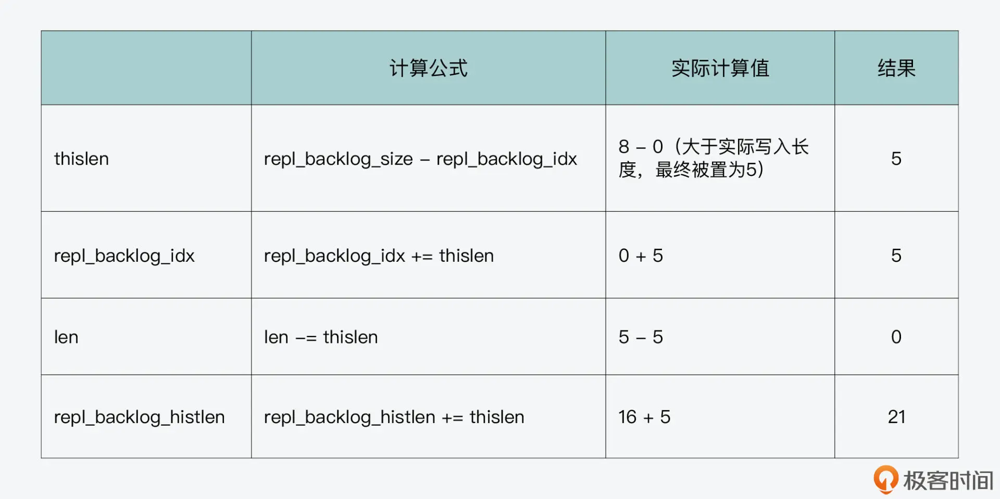

- 00 开篇词 阅读Redis源码能给你带来什么？.md.html
- 01 带你快速攻略Redis源码的整体架构.md.html
- 02 键值对中字符串的实现，用char还是结构体？.md.html
- 03 如何实现一个性能优异的Hash表？.md.html
- 04 内存友好的数据结构该如何细化设计？.md.html
- 05 有序集合为何能同时支持点查询和范围查询？.md.html
- 06 从ziplist到quicklist，再到listpack的启发.md.html
- 07 为什么Stream使用了Radix Tree？.md.html
- 08 Redis server启动后会做哪些操作？.md.html
- 09 Redis事件驱动框架（上）：何时使用select、poll、epoll？.md.html
- 10 Redis事件驱动框架（中）：Redis实现了Reactor模型吗？.md.html
- 11 Redis事件驱动框架（下）：Redis有哪些事件？.md.html
- 12 Redis真的是单线程吗？.md.html
- 13 Redis 6.0多IO线程的效率提高了吗？.md.html
- 14 从代码实现看分布式锁的原子性保证.md.html
- 15 为什么LRU算法原理和代码实现不一样？.md.html
- 16 LFU算法和其他算法相比有优势吗？.md.html
- 17 Lazy Free会影响缓存替换吗？.md.html
- 18 如何生成和解读RDB文件？.md.html
- 19 AOF重写（上）：触发时机与重写的影响.md.html
- 20 AOF重写（下）：重写时的新写操作记录在哪里？.md.html
- 21 主从复制：基于状态机的设计与实现.md.html
- 22 哨兵也和Redis实例一样初始化吗？.md.html
- 23 从哨兵Leader选举学习Raft协议实现（上）.md.html
- 24 从哨兵Leader选举学习Raft协议实现（下）.md.html
- 25 PubSub在主从故障切换时是如何发挥作用的？.md.html
- 26 从Ping-Pong消息学习Gossip协议的实现.md.html
- 27 从MOVED、ASK看集群节点如何处理命令？.md.html
- 28 Redis Cluster数据迁移会阻塞吗？.md.html
- 29 如何正确实现循环缓冲区？.md.html
- 30 如何在系统中实现延迟监控？.md.html
- 31 从Module的实现学习动态扩展功能.md.html
- 32 如何在一个系统中实现单元测试？.md.html
- 结束语 Redis源码阅读，让我们从新开始.md.html
- 捐赠
29 如何正确实现循环缓冲区？
从今天开始，我们就进入了这门课程的最后一个模块，也就是“编程技巧模块”。Redis 作为一个广泛使用的系统，除了它自身的功能实现和性能优化值得我们学习以外，它源码中的编程技巧也同样值得我们去了解和掌握。
在这个模块中，我会带你学习 Redis 在循环缓冲区、监控、功能扩展模块等方面的设计与实现，这些功能的开发对于后端系统软件来说都是非常重要的。
那么，今天这节课，我先带你来学习 Redis 中循环缓冲区的实现。
我们在开发后端数据系统时，都会面临数据同步的问题，在应对这个问题时，缓冲区的设计与实现是一定要考虑的。而循环缓冲区是缓冲区开发的一个常用技巧，所以，学习这节课的内容，可以让我们掌握如何实现循环缓冲区，尤其是实现难点的解决方法，从而可以给我们自己开发数据同步提供一个参考实现。
好了，下面我们先来看下循环缓冲区是如何工作的，有了这部分知识后，我们就能更好地理解和掌握 Redis 的代码实现了。
循环缓冲区如何工作？
在后端数据系统中，为了保证数据的可靠性，我们通常会采用主从集群的方式，在主节点和从节点之间同步数据。一般来说，主节点会先和从节点进行一次全量同步，把某个时刻的所有数据传输给从节点。
然后，主节点会持续将收到的命令发送给从节点。在这个发送的过程中，如果从节点和主节点网络断连了，主节点需要将发送给从节点的命令缓存起来。这样一来，当从节点恢复和主节点的网络连接后，主节点可以把缓存着的命令再发给从节点。在这种场景下，我们就需要用到缓冲区来暂存主节点收到的命令。
那么，在后端系统中设计缓冲区时，直接面临的一个问题就是，缓冲区空间不够用时该怎么办？
我们比较容易想到的实现方案是，当缓冲区不够用时，系统再动态分配缓冲区。但是动态分配缓冲区会有一定的开销，而且如果一旦空间不够用了，就动态分配缓冲区，这也会造成缓冲区空间持续增长，占用过多内存资源。
而实际上，缓冲区中的数据在发送给从节点后，其实可以删除掉，这样就有新空间可以用了。这也就是说，缓冲区空间是可以复用的，如下图所示：
那么，循环缓冲区的实现就是使用了复用缓冲区的设计思想，它的空间可以循环写入。从工作原理来说，它有两个特点：
- 循环缓冲区有一个写指针，表示主节点在缓冲区中的当前写入位置。如果写指针已经指向了缓冲区末尾，那么此时主节点再写入数据，写指针就会重新指向缓冲区头部，从头部开始再次写入数据，这样就可以复用缓冲区空间了。
- 循环缓冲区有一个或多个读指针，表示不同从节点在缓冲区中的当前读取位置。表示不同从节点在缓冲区中的当前读取位置。当读指针指向缓冲区末尾时，从节点也会把读指针重新指向缓冲区头部，从缓冲区头部开始继续读取数据。
下图展示了循环缓冲区的写指针工作机制，你可以看下，读指针的工作机制和这个也是类似的。
好了，了解了循环缓冲区的工作原理后，我们就来看下 Redis 中是如何实现循环缓冲区的。
Redis 中如何实现循环缓冲区？
在 Redis 的主从复制代码实现中，循环缓冲区就是被用来暂存主节点收到的命令的。
不过，在了解它的具体实现前，我们要知道，在 Redis 主从复制中，主节点会累积记录它收到的要进行复制的命令总长度，这个总长度我们称之为全局范围内的复制偏移量（简称全局复制偏移量）。
在源码中，它对应了全局变量 server 的 master_repl_offset 成员变量。而从节点从主节点读取命令时，也会记录它读到的累积命令的位置，这个位置称之为全局范围内的读取偏移量（简称全局读取位置）。
为了便于你理解，我来给你举个例子。假设主节点收到三条命令，每条命令长度都是 16 字节，那么此时，全局复制偏移量是 48。假设一个从节点从主节点上读了一条命令，此时，该从节点的全局读取位置就是 16。
因为全局复制偏移量和全局读取位置在接下来介绍的循环缓冲区实现中会反复用到，所以你要了解它们的含义。
好了，下面我们来看循环缓冲区本身的数据结构。
循环缓冲区的数据结构和初始化
在 Redis 全局变量 server 对应的结构体 redisServer 中，包含了循环缓冲区的数据结构，如下所示：
struct redisServer {
…
char *repl_backlog; //基于字符数组的循环缓冲区
long long repl_backlog_size; //循环缓冲区总长度
long long repl_backlog_histlen; //循环缓冲区中当前累积的数据的长度
long long repl_backlog_idx; //循环缓冲区的写指针位置
long long repl_backlog_off; //循环缓冲区最早保存的数据的首字节在全局范围内的偏移
…
}
从代码中你可以看到，循环缓冲区本身被设计为了一个字符类型的数组 repl_backlog，然后 Redis 设计了以下的变量来描述循环缓冲区的状态，包括：
- repl_backlog_size：这个变量值记录的是循环缓冲区本身的总长度。这个值也对应了 redis.conf 配置文件中的 repl-backlog-size 配置项。
- repl_backlog_histlen：这个变量值记录的是循环缓冲区中目前累积的数据的长度，这个值不会超过缓冲区的总长度。
- repl_backlog_idx：这个变量值记录的是循环缓冲区接下来写数据时应该写入的位置，而它就对应了刚才向你介绍的循环缓冲区的写指针。
- repl_backlog_off：这个变量值记录的是循环缓冲区中最早保存的数据的首字节，在全局范围内的偏移值。这里你需要注意的是，因为循环缓冲区会被重复使用，所以一旦缓冲区写满后，又开始从头写数据时，缓冲区中的旧数据会被覆盖。因此，这个值就记录了仍然保存在缓冲区中，又是最早写入的数据的首字节，在全局范围内的偏移量。
这几个变量在循环缓冲区的读写过程中会被反复使用，所以你需要掌握它们的含义，这样可以帮助你更好地理解循环缓冲区的实现。
接下来，我们来看下循环缓冲区的创建和读写过程。因为循环缓冲区是在主从节点复制过程中使用的，所以，它对应的相关操作函数也是在replication.c文件中实现的。
我们先来看下，循环缓冲区的创建函数 createReplicationBacklog，这个函数的操作逻辑比较简单，就是从配置文件中读取循环缓冲区配置项 repl-backlog-size 的大小，然后根据这个配置项值给循环缓冲区分配空间。
紧接着，这个函数会把 repl_backlog_histlen 初始化为 0，表示当前没有数据写入。同时，把 repl_backlog_idx 初始化为 0，表示当前可以从缓冲区头开始写入数据。此外，createReplicationBacklog 函数还会把 repl_backlog_off，设置为 master_repl_offset 加 1 的值。
这部分的初始化代码如下所示：
void createReplicationBacklog(void) {
serverAssert(server.repl_backlog == NULL);
server.repl_backlog = zmalloc(server.repl_backlog_size);
server.repl_backlog_histlen = 0;
server.repl_backlog_idx = 0;
server.repl_backlog_off = server.master_repl_offset+1;
}
这里你也需要注意的是，Redis 是在 syncCommand 函数中，调用 createReplicationBacklog 函数来创建循环缓冲区的，这部分代码如下所示：
void syncCommand(client *c) {
…
if (listLength(server.slaves) == 1 && server.repl_backlog == NULL) {
…
createReplicationBacklog();
}
…}
从代码中，你可以看到，Redis 创建循环缓冲区的条件是当前还没有循环缓冲区，以及当前的从节点只有 1 个。这也就是说，当一个主节点有多个从节点时，这些从节点其实会共享使用一个循环缓冲区，而这样设计的目的，主要是避免给每个从节点开辟一块缓冲区，造成内存资源浪费。
好了，了解了循环缓冲区的数据结构和初始化操作后，我们再来分别看下它的读写操作。
循环缓冲区的写操作
我们先来了解循环缓冲区的写操作，这是由 feedReplicationBacklog 函数实现的。这个函数的原型如下所示：
void feedReplicationBacklog(void *ptr, size_t len)
feedReplicationBacklog 函数的参数是一个指针 ptr，它指向了要写入缓冲区的数据，以及一个整数 len，它表示要写的数据长度。
循环缓冲区的写操作过程可以分成三个步骤。
第一步，feedReplicationBacklog 函数会更新全局变量 server 的 master_repl_offset 值，在当前值的基础上加上要写入的数据长度 len，如下所示：
server.master_repl_offset += len;
第二步，feedReplicationBacklog 函数会根据参数 len 执行一个循环流程，这个流程会循环执行，直到把要写入的数据都写进循环缓冲区。而这个循环流程执行的操作又可以分成三小步。
- 首先，计算本轮循环能写入的数据长度。
feedReplicationBacklog 函数会计算循环缓冲区当前的剩余空间长度 thislen。如果剩余空间长度大于要写入数据的长度，那么，它会把 thislen 设置为实际要写入的数据长度。这部分代码如下所示：
while(len) {
size_t thislen = server.repl_backlog_size - server.repl_backlog_idx;
if (thislen > len) thislen = len;
…
}
- 其次，实际写入数据。
根据第一步计算得到的 thislen 变量值，调用 memcpy 函数，将要写入的数据写到循环缓冲区中，写入的位置是 repl_backlog_idx 指向的位置，而写入的长度就是 thislen。这步操作的代码如下所示：
memcpy(server.repl_backlog+server.repl_backlog_idx,p,thislen);
结合前两小步的操作，你可以看到，feedReplicationBacklog 函数在写入数据时，如果实际写入长度小于缓冲区剩余长度，那么就按实际写入长度写数据。否则，它就按剩余空间长度写入数据。这也就是说，feedReplicationBacklog 函数每一轮都会尽量多写数据，不过每轮循环最多写入的数据长度也就是缓冲区的总长度。
好了，到这里，循环缓冲区中就写入了一次数据，接下来就是这轮循环中的最后第三小步。
- 最后，更新循环缓冲区等状态信息。
feedReplicationBacklog 函数在每轮循环的最后，会更新循环缓冲区的状态信息，包括
repl_backlog_idx 和 repl_backlog_histlen。
对于 repl_backlog_idx 来说，它会增加刚才写入的数据长度 thislen。不过因为缓冲区总长度 repl_backlog_size 的大小固定，所以，如果 repl_backlog_idx 的值等于 repl_backlog_size 的值了，那么，repl_backlog_idx 的值会被置为 0。这其实就表明，此时循环缓冲区已经写满了。那么，写指针会指向循环缓冲区的头部，从头开始再次写入。这部分的代码逻辑如下所示：
while(len) {
...
server.repl_backlog_idx += thislen;
if (server.repl_backlog_idx == server.repl_backlog_size)
server.repl_backlog_idx = 0;
...
}
而对于 repl_backlog_histlen 来说，在每轮循环的最后，它都会加上刚刚写入的数据长度 thislen。此外，feedReplicationBacklog 函数还会更新待写入数据的剩余长度，以及待写入数据的指针位置。这几步操作的代码如下所示：
len -= thislen; //更新剩余要写入的数据长度
p += thislen; //更新要写入循环缓冲区的数据指针位置
server.repl_backlog_histlen += thislen; //更新repl_backlog_histlen
好了，到这里，feedReplicationBacklog 函数就完成了写入数据的一轮循环，那么，等到待写入数据都写完后，循环流程就会结束。
接下来，就是写操作过程的第三步，也是最后一步了。在这一步中，feedReplicationBacklog 函数会检查 repl_backlog_histlen 的值，是否大于循环缓冲区总长度。如果大于的话，它会将 repl_backlog_histlen 的值设置为循环缓冲区总长度。这也就是说，一旦循环缓冲区被写满后，repl_backlog_histlen 的值就会维持在循环缓冲区的总长度。
紧接着，repl_backlog_off 值会被更新为全局复制偏移量，减去 repl_backlog_histlen 的值，再加 1。
下面的代码展示了第三步的操作，你可以看下。
//如果repl_backlog_histlen的值大于循环缓冲区总长度，那么将该值设置为循环缓冲区总长度
if (server.repl_backlog_histlen > server.repl_backlog_size)
server.repl_backlog_histlen = server.repl_backlog_size;
server.repl_backlog_off = server.master_repl_offset - server.repl_backlog_histlen + 1;
为了便于你理解刚才介绍的循环缓冲区写入过程，这里我也来给你举个例子。下面我会用表格展示数据写入过程中各状态值的变化，并辅以示意图说明。
首先，我们假设循环缓冲区总长度为 8，也就是 repl_backlog_size 值为 8，以及全局复制偏移量 master_repl_offset 初始值为 0（这个值在代码中会随机生成）。按照刚才介绍的循环缓冲区初始化操作，repl_backlog_idx、repl_backlog_histlen 的初始值为 0，而 repl_backlog_off 初始值为 1，如下图所示：

假设第一次写入长度为 5 的数据“abcde”（len=5），此时，全局复制偏移量等于初始值 0 加上写入的数据长度 5，结果为 5，也就是 master_repl_offset 等于 5。
那么，按照 feedReplicationBacklog 函数的执行逻辑，循环缓冲区的各状态值如下表所示：
下图也展示了写入长度为 5 的数据后，循环缓冲区中的内容以及全局范围内两个偏移量的值。

然后，假设第二次写入长度为 16 的数据“fghijklmnopqrstu”（len=16），此时，全局复制偏移量等于上一次的值 5，加上本次写入的数据长度 16，结果为 21，也就是 master_repl_offset 等于 21。
因为缓冲区总长度为 8，目前已经写入 5 个字符，那么要再写入 16 个字符，按照 feedReplicationBacklog 函数的执行逻辑，就需要执行一个循环流程来写入数据，而每轮循环写入缓冲区的数据长度是缓冲区当前的剩余长度，最大为缓冲区总长度。
所以，当要再写入 16 个字符时，feedReplicationBacklog 函数需要执行三轮循环，第一轮循环写入 3 个字符，第二轮循环写入 8 个字符，第三轮循环写入 5 个字符。这个写入过程中，循环缓冲区各状态信息如下面的三张表所示，你可以仔细看下。
第一轮循环写入“fgh”3 个字符，缓冲区各状态信息如下表所示：
此时，循环缓冲区中的内容，以及全局范围内两个偏移量的值，如下图所示：
紧接着第二轮循环写入“ijklmnop”8 个字符，缓冲区各状态信息如下表所示：

此时，循环缓冲区中的内容，以及全局范围内两个偏移量的值，如下图所示：
最后，第三轮循环写入“qrstu”5 个字符，缓冲区各状态信息如下表所示：

三轮循环结束后，因为 repl_backlog_histlen 已经大于缓冲区总长度了，所以它会被更新为缓冲区总长度 8，而 repl_backlog_off 会被更新为 14。此时，循环缓冲区中的内容，以及全局范围内两个偏移量的值，如下图所示：
好了，到这里，你就了解了循环缓冲区的写入过程。接下来，我们再来看下循环缓冲区的读取过程。
循环缓冲区的读操作
在 Redis 中，当从节点和主节点在断连后再次建立连接时，从节点会发送 PSYNC 命令给主节点，而这个命令中就包含了从节点的全局读取偏移量 offset，如下所示：
PSYNC <runid> <offset>
主节点收到 PSYNC 命令后，会在 masterTryPartialResynchronization 函数中处理这个命令，其中，就包含了调用 addReplyReplicationBacklog 函数，读取循环缓冲区中的数据。所以，我们可以从 addReplyReplicationBacklog 函数的实现中，了解循环缓冲区的读操作。
addReplyReplicationBacklog 函数的执行逻辑可以分成三步。
首先，它会把从节点发送的全局读取位置 offset，减去 repl_backlog_off 的值，从而得到从节点读数据时要跳过的数据长度 skip，如下所示：
skip = offset - server.repl_backlog_off;
就像刚才给你介绍的，repl_backlog_off 表示仍在缓冲区中的最早保存的数据的首字节，在全局范围内的偏移量。而从节点的全局读取位置和 repl_backlog_off 不一定一致，所以两者相减，就是从节点要跳过的数据长度。
然后，addReplyReplicationBacklog 函数要计算缓冲区中，最早保存的数据的首字节对应在缓冲区中的位置。这个位置很重要，因为有了它，从节点才能把全局读取位置转换到缓冲区中的读取位置。这个位置的计算代码如下所示：
j = (server.repl_backlog_idx + (server.repl_backlog_size-server.repl_backlog_histlen)) % server.repl_backlog_size;
其实，这里我们可以分成两种情况来理解这段计算代码。
一是，缓冲区还没有写满。此时，repl_backlog_histlen 就等于 repl_backlog_idx，所以代码的计算相当于 repl_backlog_size 对它自己取模，结果为 0。这也就是说，当缓冲区还没写满时，缓冲区中最早保存的数据的首字节，就是在缓冲区头，这也是因为缓冲区没有被覆盖重写。你可以看看下面的图。

二是，缓冲区已经写满过，并且已从头再次写入数据。此时，repl_backlog_histlen 就等于缓冲区总长度 repl_backlog_size。所以，代码的计算相当于 repl_backlog_idx 对 repl_backlog_size 取模，结果就是 repl_backlog_idx。
这也好理解，repl_backlog_idx 指向了下一次写入的数据位置，当缓冲区写满过，这个位置上是有数据的，而这个数据正是缓冲区中最早保存数据的首字节。一旦再次写入时，这个位置就会被覆盖重写了，你可以看看下图。

当计算得到缓冲区中最早保存数据的首字节，在缓冲区中的对应位置后，addReplyReplicationBacklog 函数就会在此基础上，增加从节点要跳过的数据长度，得到一个新的位置值。因为这个位置值可能超越缓冲区长度边界，所以它要对 repl_backlog_size 取模。这样一来，就得到了从节点的全局读取位置在缓冲区中的对应位置了。
j = (j + skip) % server.repl_backlog_size;
好了，到这里，我们就已经知道从节点要在缓冲区的哪个位置开始读取数据了。
最后，addReplyReplicationBacklog 函数会计算实际要读取的数据长度 len，这是用缓冲区中数据的实际长度减去要跳过的数据长度，如下所示：
len = server.repl_backlog_histlen - skip;
紧接着，addReplyReplicationBacklog 函数会执行一个循环流程来实际读取数据。之所以要设计一个循环流程来读取数据，是因为在循环缓冲区中，从节点可能从读取起始位置一直读到缓冲区尾后，还没有读完，还要再从缓冲区头继续读取。这就要分成两次来读取了。
下面的代码展示了这个循环流程。
while(len) {
long long thislen = ((server.repl_backlog_size - j) < len) ?
(server.repl_backlog_size - j) : len;
...
addReplySds(c,sdsnewlen(server.repl_backlog + j, thislen)); //实际读取并返回数据
len -= thislen;
j = 0;
}
你可以看到，当读取起始位置（j）到缓冲区尾（repl_backlog_size）的长度，小于要读取的长度（len），那么就表明从节点还要从头继续读数据。此时，函数就先从读取起始位置一直读到缓冲区末尾（server.repl_backlog_size - j）。
而当读取起始位置到缓冲区尾的长度（repl_backlog_size-j）大于要读取的长度（len）时，函数就直接读取要读的长度（len）就行。
在这个过程中，addReplyReplicationBacklog 函数会调用 addReplySds 函数，来返回读取的数据。
好了，到这里，整个循环缓冲区的读写过程就介绍完了。你也可以从这个过程中看到，要理解循环缓冲区的读写，重点是要理解缓冲区长度、下次写入位置、最早保存数据在全局和缓冲区中对应位置，以及从节点全局读取位置对应的缓冲区位置等状态信息的计算。
小结
今天这节课的内容就到这里，我们来总结下。
在今天的课程中，我给你介绍了循环缓冲区的工作原理，以及 Redis 在主从复制中实现的循环缓冲区。那么从工作原理上来看，循环缓冲区似乎并不复杂，当缓冲区写满后，程序就会重新从头开始写入数据；而当程序已经读到缓冲区尾时，也会继续从头读取数据。
但是，我也想再提醒你注意下，在实现循环缓冲区时会面临的两个难点。
一是，累积要发送的数据长度可能会大于缓冲区长度，因此旧数据会被覆盖。在写入数据时，我们如何知道，仍在缓冲区中且是最早保存的数据的首字节，在全局范围内对应的位置。而这也是从节点能读取到的最早数据了。Redis 源码使用 repl_backlog_off 变量来记录这个位置，你需要掌握这个值的计算和使用。
二是，在读取数据时，我们如何知道从节点发送的全局读取位置在循环缓冲区中的对应位置。因为只有有了这个位置的值，程序才能实际从缓冲区中读取数据。Redis 源码在 addReplyReplicationBacklog 函数中，是分两步来计算这个位置值的。
它先是计算缓冲区中最早保存的数据的首字节，在缓冲区中的位置；然后，它在这个位置的基础上，会加上从节点要跳过的数据长度，这就得到了从节点全局读取位置。在缓冲区中的对应位置了。
实际上，循环缓冲区在数据同步、收发等场景中使用非常广泛，我希望你能理解和掌握 Redis 源码对循环缓冲区的实现，尤其是上面这两个难点的实现方法，这样，当你自己实现循环缓冲区时就比较容易了。
每课一问
在 addReplyReplicationBacklog 函数中，它会计算从节点在全局范围内要跳过的数据长度，如下所示：
skip = offset - server.repl_backlog_off;
然后，它会根据这个跳过长度计算实际要读取的数据长度，如下所示：
len = server.repl_backlog_histlen - skip;
请你阅读 addReplyReplicationBacklog 函数和调用它的 masterTryPartialResynchronization 函数，你觉得这里的 skip 会大于 repl_backlog_histlen 吗？
© 2019 - 2023 Liangliang Lee. Powered by gin and hexo-theme-book.